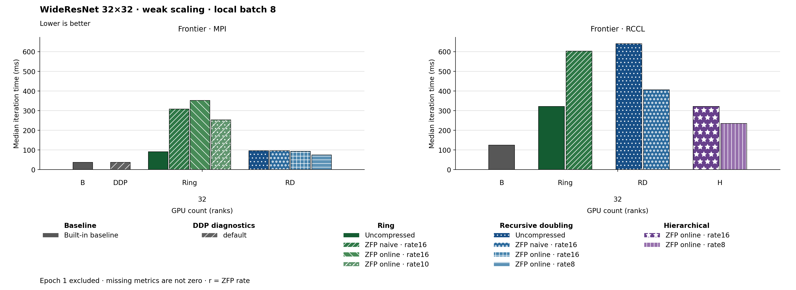

The figure uses bars. Families and methods are identified by text and patterns in addition to color. The metric is Median iteration time (ms). Frontier · MPI, GPU count (ranks) 32: Built-in baseline has the lowest plotted value, 37.040. Frontier · RCCL, GPU count (ranks) 32: Built-in baseline has the lowest plotted value, 124.590. Epoch 1 is excluded. Values are medians; when repeated runs are available the selected repeat policy is median. These are not confidence intervals across repeated jobs. Missing or unrecorded metrics are omitted, not set to zero.
| Panel | GPU count (ranks) | Method | Value | Runs |
|---|---|---|---|---|
| Frontier · MPI | 32 | none | 37.04 | 1 |
| Frontier · MPI | 32 | ring | 91.01 | 1 |
| Frontier · MPI | 32 | ring_zfp_naive:16 | 308.05 | 1 |
| Frontier · MPI | 32 | ring_zfp_online_coll:16 | 351.77 | 1 |
| Frontier · MPI | 32 | ring_zfp_online_coll:10 | 253.35 | 1 |
| Frontier · MPI | 32 | recursive_doubling | 95.82 | 1 |
| Frontier · MPI | 32 | recursive_doubling_zfp_naive:16 | 95.89 | 1 |
| Frontier · MPI | 32 | recursive_doubling_zfp_online_coll:16 | 92.75 | 1 |
| Frontier · MPI | 32 | recursive_doubling_zfp_online_coll:8 | 75.0 | 1 |
| Frontier · MPI | 32 | default | 37.33 | 1 |
| Frontier · RCCL | 32 | none | 124.59 | 1 |
| Frontier · RCCL | 32 | ring | 321.79 | 1 |
| Frontier · RCCL | 32 | ring_zfp_naive:16 | 602.43 | 1 |
| Frontier · RCCL | 32 | hierarchical_zfp_online_coll:16 | 321.755 | 2 |
| Frontier · RCCL | 32 | hierarchical_zfp_online_coll:8 | 234.675 | 2 |
| Frontier · RCCL | 32 | recursive_doubling | 640.76 | 1 |
| Frontier · RCCL | 32 | recursive_doubling_zfp_naive:16 | 405.89 | 1 |